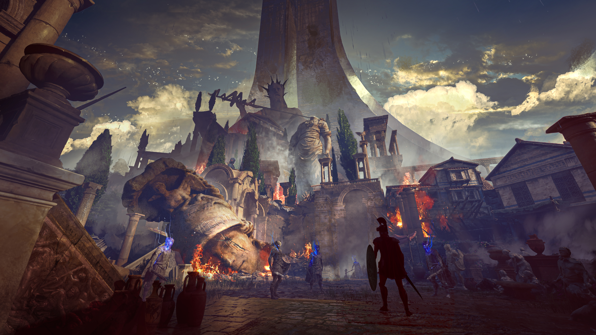

What if Orpheus could have a second chance..
A LOVE WORTH DEFYING DEATH FOR.
Nocturne of Olympus is a dark fantasy Soulslike inspired by the myths of ancient Greece. Journey through a world of the classic Greek Myths, retold from the lense of a contemporary psycological approach.
Explore a shattered world inspired by the darkest corners of Greek mythology, current Developed by Artemis Atelier, a tiny indie studio founded by Mauro Cerati, Principle concept artist with 12+years of experience working for AAA projects. We're currently looking to develop the prototype.
“Reassembled from the remnants of his former self, Orpheus walks once more among the living.
His world begins and ends with Eurydice.
Armed with his incomplete lyre, he must reclaim his lost power and carve a path toward Tartarus.”
The journey begins
Recover the strings of your lyre, descend into the deepest reaches of the underworld.
Follow the journey as this world takes shape.